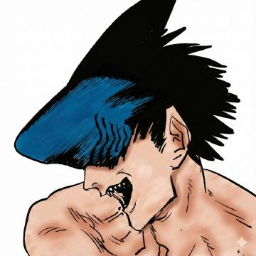
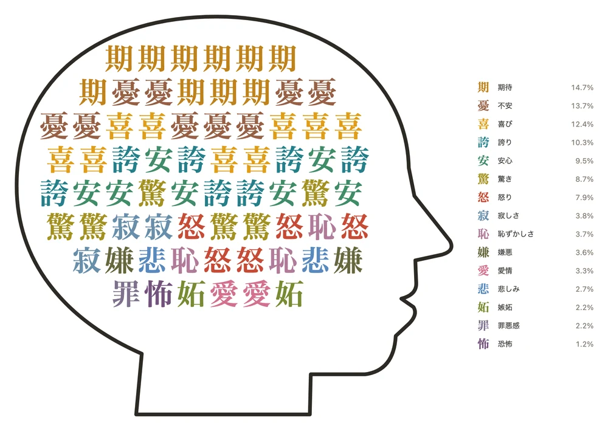

この項目では、ソフトウェアエンジニア・実業家について説明しています。同姓同名の人物とは別人です。
| ないとう こうた Kota Naito | |
|
本人がXで使用しているアイコン
| |
|
 GitHubで使用しているアイコン
| |
| 別名 | konaito |
|---|---|
| 出身地 | 日本・神奈川県川崎市[1] |
| 拠点 | 東京都 |
| 出身校 | 岩手大学 理工学部（数理・物理） 42 Tokyo |
| 職業 | ソフトウェアエンジニア 実業家 音楽家 |
| 活動期間 | 2021年 - |
| 肩書き | 合同会社FYBE.jp 代表社員（CEO）[2] |
| 著名な実績 | BLOCKCHAIN HACKATHON for students 2023 Grand Prize[3] Sui x ONE Championship Tokyo Builders' Arena 優勝[18] VoiceOSハッカソン 優勝[19] |
| 音楽活動 | |
| ジャンル | J-POP |
| 担当 | 作詞・作曲・プロデュース |
| 活動期間 | 2025年 - |
| レーベル | 自主制作 |
| ウェブサイト | |
| GitHub · X · note | |
内藤 剛汰（ないとう こうた、英: Kota Naito）は、日本のソフトウェアエンジニア、実業家、音楽家。konaito（コナイト）の名義で活動する。合同会社FYBE.jp代表社員[2]。岩手大学理工学部で数理・物理を学ぶ傍ら、42 Tokyoでプログラミングを習得した。
AIエージェントを開発工程の中心に置く開発スタイルで、Webサービス、デスクトップ・モバイルアプリ、強化学習、開発者ツールまで幅広い領域のソフトウェアを制作している。並行して、AI時代における人間の役割を論じるエッセイを執筆し、自ら作詞・作曲・プロデュースした楽曲を配信している。
目次
経歴
生い立ちと学業
神奈川県川崎市出身[1]。岩手大学理工学部に進学し、数理・物理を専攻した。本人によれば、2021年の時点で「物理・数学の博士はAIに代替される」と予見しており、ChatGPTの登場を受けて休学し、東京で活動を始めた[4]。
42 Tokyoとハッカソン
フランス発のエンジニア養成機関である42 Tokyoに所属し、C言語によるシステムプログラミング課題に取り組んだ。2023年からはブロックチェーン関連のハッカソンに出場した。
2023年12月、博報堂キースリーが運営する「web3 Global Hackathon 2023AW」に、wasabiとのチーム「Enn-Drive」で出場し、マツダ優秀賞を受賞した。ブロックチェーン技術を自動車での移動体験に応用する作品で、内藤はフロントエンドとサーバーサイドを担当した[5]。
多くのユーザーがWeb2のような感覚でブロックチェーンが提供する超情報共有社会の基盤に乗れるように触りやすいデザインを心がけました。受賞できたということだけでなく、技術的にもエンジニアとしての飛躍のきっかけになったと思います。 — 内藤剛汰、42 Tokyo公式ニュース（2023年12月9日）[5]
同月、本郷Web3バレーが主催した「BLOCKCHAIN HACKATHON for students 2023」に、wasabi、akafudaとのチーム「竹虎」で出場し、Grand PrizeとCrypto Games賞を受賞した。ゼロ知識証明とToken Curated Registry（TCR）を組み合わせ、透明かつ秘匿に投票できる仕組みをブロックチェーン上に実装した作品である。内藤はこの大会で初めてスマートコントラクトを書いたと述べている[3]。Web3の思想に初めて触れたのは大会の約1か月前で、この大会が2回目のハッカソンだった[22]。
2024年2月には、ETHGlobalのハッカソン「Circuit Breaker」に、ゼロ知識証明を使って正確な座標を明かさずに位置を証明する「zk-Geo」を出品した[23]。
2024年8月の本人の投稿によれば、それまでの約1年で国内外の約10のハッカソンに出場し、その賞金で韓国に1週間、アメリカに1か月、ヨーロッパに2か月滞在した[13]。42 Tokyo内ではLT会を開き、Next.jsの学習法や、フロントエンドとバックエンドをつなぐ際に起きるCORSの問題について発表した[24]。2025年2月には、42 Tokyo発の起業をまとめたページを公開している[25]。2025年4月24日を最後に42 Tokyoでの活動を終え、教育機関に求めるもののうち「コミュニティと機会を大変に享受できました」と振り返っている[14]。
起業
ハッカソンの次は自分のプロダクトで評価されたいと考え、2024年夏に起業した[13]。2024年8月22日、合同会社FYBE.jpの法人番号が指定された。当初の本店は神奈川県川崎市幸区にあり、2025年7月30日に東京都港区北青山へ移転した[6]。
事業
FYBE.jp
合同会社FYBE.jpは「未来型社外CTO」を掲げ、社外の技術責任者として経営と技術をつなぎ、技術戦略の立案から実装までを一貫して担う。個別のアプリを納品することではなく、データ定義・業務ロジック・権限を統合し、社外CTOがいなくても機能し続ける構造を顧客企業に残すことを成果と定義している[2]。
自社プロダクトとして、以下を発表している。
| 発表日 | 名称 | 概要 |
|---|---|---|
| 2025年7月28日 | Web2MD | WebページをAIが扱いやすいMarkdownに変換するツール。公開から約1週間でユニークユーザー1,600人を超えたと発表した[7]。 |
| 2025年11月30日 | ヒトシラ | ビジネスパーソンの「事実だけの年表」をWeb上の情報から自動生成するツール。AIによる推測や人物評価を排している[8]。 |
| 2026年1月4日 | 外部スポット開発組織 | 現場の課題をAI駆動開発で短期にプロダクト化するサービス[9]。 |
| 2026年1月14日 | 営業リスト自動化ツール | 業界を選ぶだけで営業リストを作成し、問い合わせフォームへの入力と送信まで自動化する[9]。 |
| 2026年1月14日 | バイラルくん | AIアバターとトレンド分析を組み合わせたSNSマーケティングツール[9]。 |
| 2026年1月15日 | PDFStudio | 営業資料やスライドの「読まれ方」を可視化するPDF分析ツール。事前登録を開始した[9]。 |
眼光出版
FYBE.jpが運営する出版レーベル。「思考は外注可能、理解は外注不可能。」を標語とし、内藤のエッセイを体系立てて公開している[10]。
ソフトウェア開発
開発スタイル
設計・検証・レビューを自身が担い、実装の多くをAIコーディングエージェントに任せる開発スタイルをとる。リポジトリには、エージェントが参照する指示書（AGENTS.md）、型検査・静的解析・テストを実行するCI、スキーマの変更を管理するマイグレーションを置き、小さな単位のプルリクエストで変更を積み重ねる。
GitHub上の活動
非公開を含むGitHub上の全リポジトリ（フォークを除く）を集計した値を以下に示す。
| 年 | コントリビューション |
|---|---|
| 読み込み中… | |
| 領域 | リポジトリ数 | 主な技術 |
|---|---|---|
| 読み込み中… | ||
JPYCガス支援
2025年11月、日本円建てステーブルコインJPYCを受け取っても、手数料（ガス代）に使うPOLがないため動かせない人に、最低限のPOLを配布するWebアプリJPYCガス支援を公開した。JPYC社からJPYCを受け取った履歴があり、POLの残高が0.02以下のアドレスが請求できる。告知のポストは約10万回表示された[15]。
運営費は寄付でまかなわれている。公開から4日後、内藤は支援を受けたあと自らも寄付する利用者が10%、寄付だけをする人が60%いると報告した[16]。2026年4月には、寄付だけで運営が自立していると報告している[17]。
主な公開作品
| 名称 | 分類 | 概要 | 公開 |
|---|---|---|---|
| nimmt | 強化学習 | カードゲーム「6 Nimmt!」のAI。PPOによる自己対戦とリーグ学習で訓練し、1手96プレイアウトの先読み探索に対して1ディールあたり平均2.40点少ない失点で勝つ。先行研究のAlphaZero型探索にも有意に勝ち越した。 | Web版 |
| terminal-browser | 開発者ツール | ターミナル内で動くWebブラウザ。ヘッドレスChromiumの画面をkitty graphics protocolで描画し、マウスとキー入力をCDPで転送する。TypeScriptのみで実装し、npmで配布している。 | 紹介ページ · npm |
| OptTab | macOSアプリ | ⌥⇥で、操作中のアプリのウィンドウをSpace・フルスクリーン・最小化をまたいで切り替えるウィンドウスイッチャー。公開APIのみで実装している。 | 紹介ページ · Homebrew |
| ai-karaoke | Webアプリ | 自作曲のカラオケPWA。ボーカル低減、キー変更、マイクの音程検出をすべてブラウザ内で処理し、音声をサーバーへ送らない。 | Web版 |
| milliondoubt | ゲームAI | ミリオンダウトのWeb版。ルールを理解した戦略層の上に、自己対戦で学習したニューラルネットワークを組み合わせる。 | Web版 |
| KEIRIN SIGNAL | データ分析 | 競輪予測モデルの検証ダッシュボード。2025年の18,299レースを対象としたローリング検証で、3着以内の的中率は79.8%。 | Web版 |
| 同じ空 | ゲーム | 4人用の論理と運のカードゲーム。3人のNPCと対戦できる。 | Web版 |
| TALA / CRAPS | ゲーム | Three.jsによる3Dのクラップス。ダイスをつかんで投げる操作と簡易物理演算による投球を実装した。 | Web版 |
| English Article Tetris | 教育 | 冠詞や可算・不可算名詞を判断する英語学習用のテトリス。 | Web版 |
| Codex Notification Bridge | デスクトップアプリ | 入力したメッセージを、会話の文脈から判断した適切なCodexタスクへ送るElectronアプリ。 | ダウンロード |
| agent-sessions-menubar | macOSアプリ | Claude CodeとCodexの直近のセッションと使用量をメニューバーに表示し、再開用のコマンドをコピーできる。 | GitHub |
| ito | マルチエージェント | 4社の大規模言語モデルが会話しながらカードゲーム「ito」を遊ぶ実験。各AIには自分の手札と公開情報だけを渡す。 | GitHub |
| ContextCap | macOS / Android | 画面を定期的に記録し、撮影直後に端末内でOCRする常駐レコーダー。両OSで保存形式を揃えている。 | GitHub |
| Manga Agent | AIツール | 企画・ネームのレビューから画像生成、品質確認までを仕様に沿って進める漫画制作ハーネス。 | GitHub |
| ClaudeAsOpenAI | 開発者ツール | Claude Agent SDKを、OpenAI Chat Completions API互換のインターフェースで使えるようにするプロキシサーバー。 | GitHub |
音楽
konaito名義で、作詞・作曲・プロデュースを自身で手がけた楽曲を配信している[11]。歌詞には、AIによって技能の価値が短期間で失われていくことへの焦りや、人間の言葉や努力の意味といった、エッセイと共通する主題が多い。
| 発売日 | 形態 | タイトル | 収録曲 |
|---|---|---|---|
| 2025年12月12日 | EP | 焦燥 （Anxiety） | |
| 2026年9月22日 | シングル | 愛を伝えるだとか （Before I'm Ready） |
参加作品
- さだすこ feat. konaito「俺らのYUMEMI」
作品の特徴
「時定数の低い世界で」は、ホワイトカラーの業務がAIエージェントに置き換わっていく状況と、20代のキャリアの道筋が崩れていく焦りを描く。学歴を「免責ラベル」、人間に残るものを「運と責任」とする歌詞は、2025年のエッセイ「みんなのやりたい仕事の未来」の論点と重なる[10]。
「愛を伝えるだとか」は、贈り物をAIに考えてもらった「僕」が、喜ぶ相手を前に寂しさを覚える歌である。
百点満点の 言葉より
僕のゼロ点を 愛してくれ — 「愛を伝えるだとか」より
楽曲は、自作のカラオケアプリai-karaokeで、歌詞の同期表示とともに歌うことができる。
執筆活動
2025年1月から、noteと眼光出版でAI時代の仕事・つながり・意味・交換を論じるエッセイを発表している[12][10]。
個人ブログkonaito.comでも、文章を公開している。
主な概念
- 時定数 — 技能が価値を失うまでの速さ。AIはあらゆる技能の時定数を圧縮する装置であり、人間には「燃えないものを見る目」と「隣の誰かの手」が残るとする（「時定数ゼロの世界で、人間は何を握るのか」）。
- 発散と収束 — 案を出す発散はAIの仕事、選択肢を「見る」収束は人間の仕事とする（「『考える』なんてAIにやらせろ、人間の仕事は『見る』ことだ」）。
- 動摩擦と静止摩擦 — AIは考える・調べる・書く・作るといった営みの抵抗（動摩擦）をほぼゼロにした。しかし、止まっている人間を動かす意思（静止摩擦）は人間にしか作れないとする（「動摩擦が0になった世界」）。
- 天才と仙人 — 有限性を捉えて張る「天才」と、不変を見抜いて留まる「仙人」。時間との向き合い方で人間を分類する（「仙人と天才」）。
主な著作
| 公開 | タイトル |
|---|---|
| 2025年1月 | AIによりプログラミングというスキルが陳腐化されていくこの世界で「僕たちはどう生きるか」 |
| 2025年2月 | 20代はおしまい，40代ははじまり -AI時代への絶望- |
| 2025年4月 | みんなのやりたい仕事の未来 |
| 2025年7月 | AIが奪う「新卒の仕事」──アメリカの警告は、日本の未来か？ |
| 2026年2月 | 生成AIとAIエージェントの違い |
| 2026年3月 | AGI前にする、人生最後の努力 |
| 2026年3月 | 友達ショート — 制作コスト0の世界で、私たちは何を失うのか |
| 2026年3月 | 今のうちに絶望しておこう、AGIピル |
| 2026年3月 | 何でもするから飯をくれ——交換の席がなくなる世界で |
| 2026年3月 | 仙人と天才 v2 |
| 2026年3月 | 時定数ゼロの世界で、人間は何を握るのか（眼光出版） |
| 2026年4月 | 複雑な社会を、複雑なまま捉えよう |
| 2026年4月 | AGIという死滅回遊後の「同化」 |
| 2026年4月 | 「考える」なんてAIにやらせろ、人間の仕事は「見る」ことだ |
| 2026年5月 | 動摩擦が0になった世界 -人間は摩擦になる- |
| 2026年8月 | シンギュラリティ後の世界は、ちいかわ |
受賞歴
- 2023年12月 – web3 Global Hackathon 2023AW マツダ優秀賞（チーム「Enn-Drive」）[5]
- 2023年12月 – BLOCKCHAIN HACKATHON for students 2023 Grand Prize、Crypto Games賞（チーム「竹虎」）[3]
- 2025年11月 – Sui x ONE Championship Tokyo Builders' Arena 優勝、最も睡眠が少なかったで賞[18]
- 2026年4月 – VoiceOSハッカソン 優勝[19]
出演
講演
- Next.js最強 – 42 Tokyo LT会（資料は2024年7月公開）[24]
- ブラウザはあなたを守りたい - CORS – 42 Tokyo LT会（資料は2024年7月公開）[24]
インターネット番組
- M&A CAMP（YouTube）
- 【稼いでから考えろ】何もない時の優秀な人の口説き方を亀山会長にガチ相談（2025年1月24日公開）
- 【覚悟が会社を強くする】お金を生み出す商売論を亀山会長に聞いてみた【公開収録】（2025年1月30日公開） – サムネイルにも登場
いずれも、DMM.com会長の亀山敬司が起業家の相談に答える回である。
人物
- 技術、事業、投資、音楽と関心の幅が広い。趣味は『ポケットモンスター』と『ONE PIECE』[1]。
- エッセイでは、数理物理の用語（時定数、摩擦）、柄谷行人の交換様式論、カミュの『シーシュポスの神話』、漫画『呪術廻戦』などを同じ平面に並べて論じる[10]。
- Xでは@konaito_copilotとして、AIの動向への考察や自作プロダクトの告知を発信している。2026年7月、Claude Fable 5の提供期間延長の意図を読んだ引用ポストは約15.9万回[20]、2026年9月、AI生成動画の技術に驚いた引用ポストは約86万回表示された[21]。
画面から推定した感情


内藤は、自作の画面記録ツールContextCap[26]で記録したPCとAndroidの画面の文字（OCR）から、その時々の気分をJevに推定させる実験を行っている。2026年8月3日から9月21日までの48日間を10秒ごとに区切り、文字のある188,658区間それぞれについて、15の感情のどれに近いかの確率を求めた。全区間の確率を合計して平方根をとり、割合を頭の中の文字数で表したのが図である。
最も多いのは期待（14.7%）で、不安（13.7%）、喜び（12.4%）が続く。上位7つの感情で全体の77%を占める。期待・不安・喜びの3つは、全区間の65%で最も確率の高い感情だった。
これは画面の文字から推定した値で、本人の感情を測ったものではない。画面を見ていない時間や、画像・音声・動画の中身は含まれない。また表示には平方根補正をかけており、補正前は期待（22.4%）と恐怖（0.2%）に約140倍の差があるのに対し、補正後は約12倍まで縮んでいる。
| 感情（図の文字） | 図の割合 平方根補正後 | 補正前の 平均確率 | 最も確率が高かった 区間の割合 |
|---|---|---|---|
| 期待（期） | 14.7% | 22.4% | 25.2% |
| 不安（憂） | 13.7% | 19.5% | 22.0% |
| 喜び（喜） | 12.4% | 16.0% | 17.4% |
| 誇り（誇） | 10.3% | 11.0% | 12.8% |
| 安心（安） | 9.5% | 9.4% | 7.6% |
| 驚き（驚） | 8.7% | 7.9% | 6.7% |
| 怒り（怒） | 7.9% | 6.5% | 4.9% |
| 寂しさ（寂） | 3.8% | 1.5% | 0.7% |
| 恥ずかしさ（恥） | 3.7% | 1.5% | 0.6% |
| 嫌悪（嫌） | 3.6% | 1.3% | 0.7% |
| 愛情（愛） | 3.3% | 1.1% | 0.5% |
| 悲しみ（悲） | 2.7% | 0.8% | 0.5% |
| 嫉妬（妬） | 2.2% | 0.5% | 0.2% |
| 罪悪感（罪） | 2.2% | 0.5% | 0.3% |
| 恐怖（怖） | 1.2% | 0.2% | 0.05% |
脚注
- ^ konaito のGitHubプロフィール（本人作成のペルソナ・プロファイル）。2026年9月28日閲覧。
- ^ FYBE 公式サイト。合同会社FYBE.jp。2026年9月28日閲覧。
- ^ 「BLOCKCHAIN HACKATHON for students 2023」にて42 Tokyoの学生による2チームが受賞. 42 Tokyo（2023年12月16日）。
- ^ 複雑な社会を、複雑なまま捉えよう. note（2026年4月11日）。
- ^ 「web3 Global Hackathon 2023AW」にて42 Tokyoの学生による2チームが受賞. 42 Tokyo（2023年12月9日）。
- ^ 合同会社FYBE.jp（法人番号 6020003026687）の変更履歴. 国税庁法人番号公表サイト。2026年9月28日閲覧。
- ^ 【ユニークユーザー1,600人突破】Web2MDが変える情報整理の新常識. PR TIMES（2025年8月2日）。
- ^ "ヒトシラ"、商談前の「ググっても相手の情報が出てこない」問題を解決。 PR TIMES（2025年11月30日）。
- ^ 合同会社FYBE.jpのプレスリリース一覧. PR TIMES。2026年9月28日閲覧。
- ^ 眼光出版. 合同会社FYBE.jp。2026年9月28日閲覧。
- ^ konaito - トピック. YouTube。2026年9月28日閲覧。
- ^ konaito. note。2026年9月28日閲覧。
- ^ 内藤剛汰 [@konaito_copilot]（2024年8月25日）. 「去年、国内外10個くらいのハッカソンに出て…」. X。
- ^ 内藤剛汰 [@konaito_copilot]（2025年4月25日）. 「42，良かった．」. X。
- ^ 内藤剛汰 [@konaito_copilot]（2025年11月2日）. 「$JPYC 貰ってもガス代なく動かせない人のために…」. X。
- ^ 内藤剛汰 [@konaito_copilot]（2025年11月6日）. 「$JPYC で初めてブロックチェーンに触れる人向けにガス代を寄付するプロジェクト…」. X。
- ^ 内藤剛汰 [@konaito_copilot]（2026年4月26日）. 「超久しぶりにJPYCガス支援サイト…」. X。
- ^ 内藤剛汰 [@konaito_copilot]（2025年11月16日）. 「Suiハッカソン優勝しました」. X。
- ^ 内藤剛汰 [@konaito_copilot]（2026年4月3日）. 「VoiceOSハッカソン行ったら…」. X。
- ^ 内藤剛汰 [@konaito_copilot]（2026年7月8日）. 「claude fableを使うために…」. X。
- ^ 内藤剛汰 [@konaito_copilot]（2026年9月8日）. 「いや、普通に技術として…」. X。
- ^ 内藤剛汰 [@konaito_copilot]（2023年12月17日）. 「本郷ハッカソンお疲れ様でした！」. X。
- ^ zk-Geo. ETHGlobal Showcase（Circuit Breaker）。2026年9月28日閲覧。
- ^ 内藤剛汰 [@konaito_copilot]（2024年7月15日・27日）. 「以前、42TokyoでLT会をやった時に扱った資料です。」、「以前、42内でLT会を開いた時に発表した資料です。」 X。
- ^ 内藤剛汰 [@konaito_copilot]（2025年2月23日）. 「42Tokyo発起業まとめてみた」. X。
- ^ ContextCap. GitHub。2026年9月28日閲覧。
外部リンク
- konaito – GitHub
- 内藤剛汰 (@konaito_copilot) – X
- konaito – note
- konaito - トピック – YouTube
- FYBE – 合同会社FYBE.jp
- 眼光出版
- 日本のソフトウェア開発者
- 日本の実業家
- 日本のシンガーソングライター
- 日本のエッセイスト
- 岩手大学の人物
- 42 Tokyoの人物
- 神奈川県出身の人物
- ハッカソン受賞者
- 存命人物